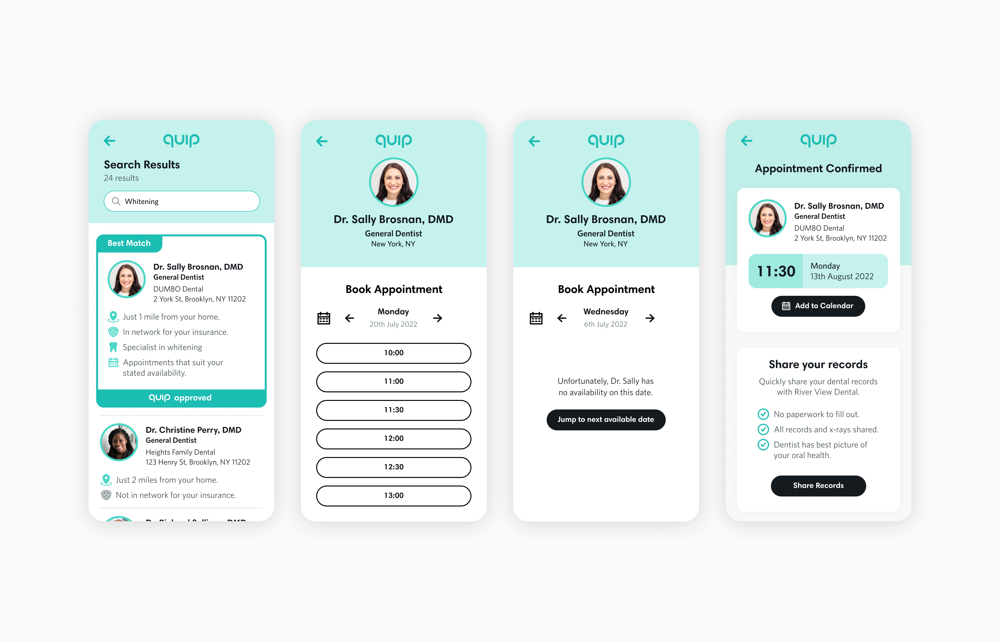
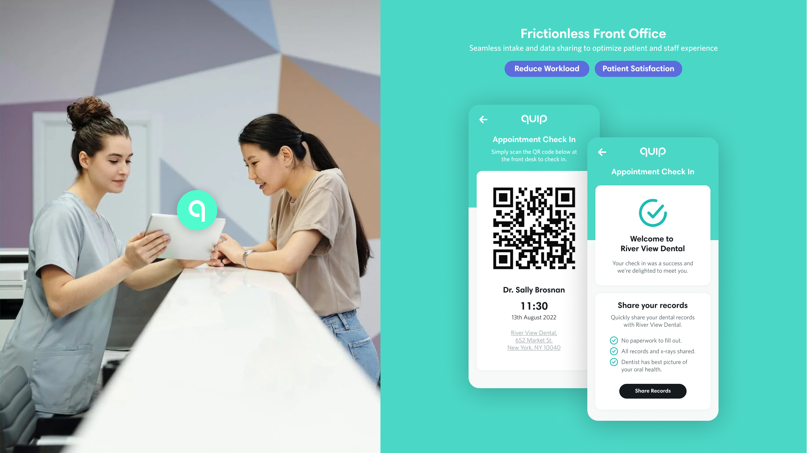
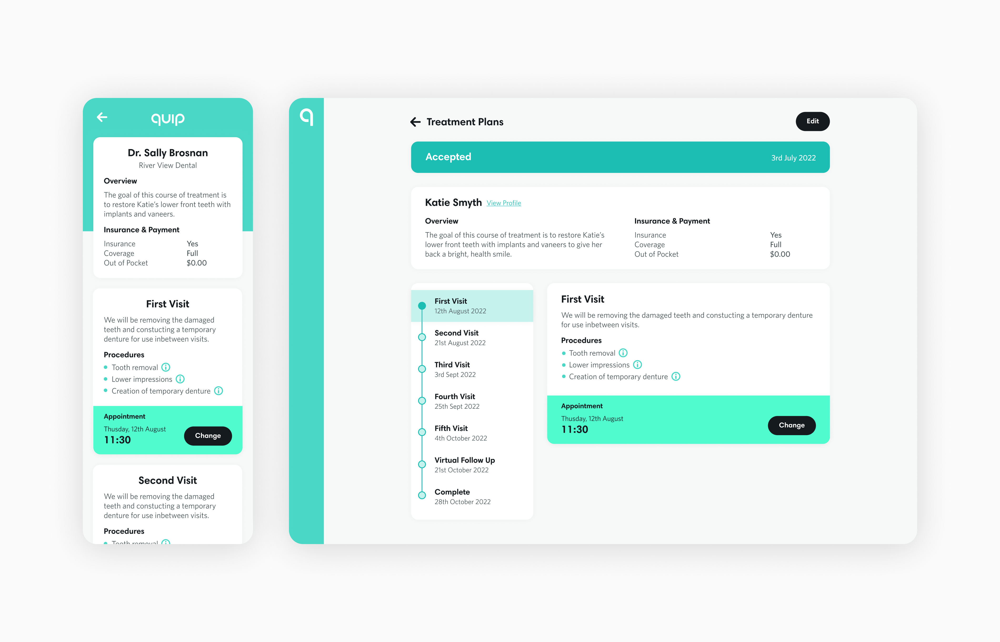
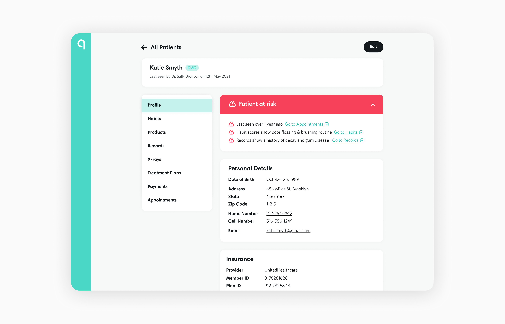
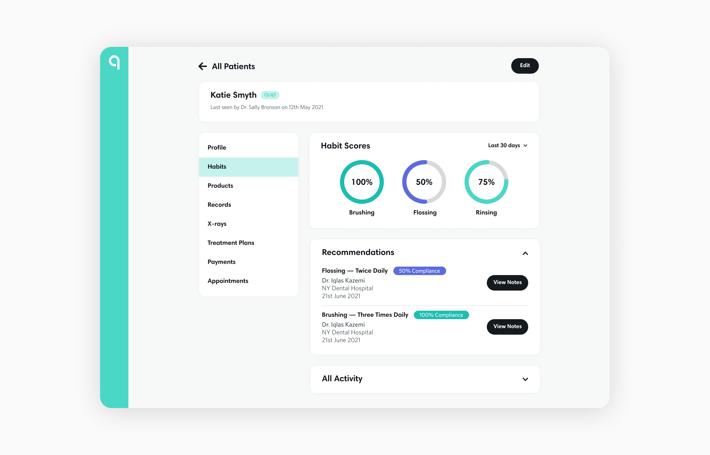
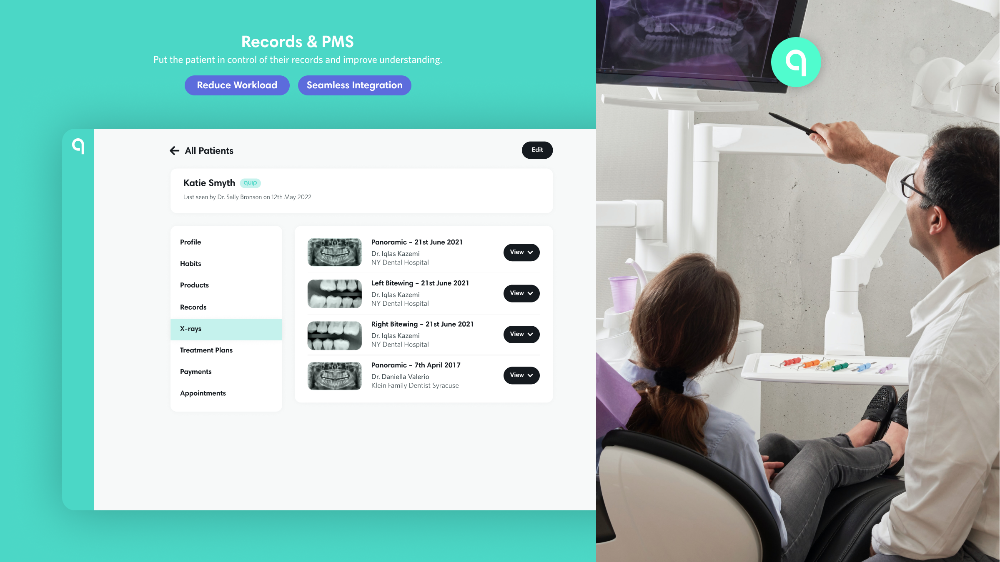
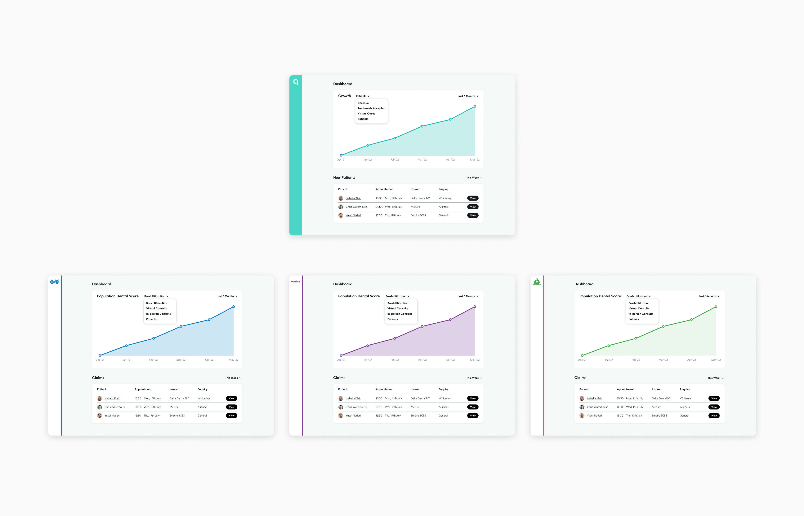

As quip expanded its mission to improve oral health beyond the home, the company identified dental office interactions as a key friction point in the patient journey. From confusing booking systems to fragmented treatment records, the traditional experience was ripe for reinvention.
ChallengeDental care is often delayed or avoided due to friction at every step: unclear appointment availability, long check-in processes, poor communication, and inconsistent record-keeping. quip needed a unified platform that could improve efficiency for offices while delivering a frictionless, user centred experience for patients.
ApproachWe set out to reimagine the dental visit. To make it as simple, intuitive, and modern as the brushing experience they’ve already transformed and deliver a streamlined digital platform that covered the full dental office journey, including:
Smarter Booking Flow: Intuitive scheduling with realtime availability, reminders, and patient preferences.
Touchless Office Check-In: Mobile based check-in and insurance verification to minimize wait times and paperwork.
Treatment Planning Interface: Clear, collaborative planning tools that help patients understand procedures and make informed decisions.
Integrated Record Management: A secure, centralized system for storing and sharing treatment history, imaging, and notes across practices.
The platform was tested and piloted across select dental partners with promising outcomes. We had very positive feedback from office staff, practice owners and patients including reduced average check-in times, reduced administrative workload and, improved clarity and confidence in treatment decisions.
By rethinking the dental office experience from the ground up, quip is delivering on its promise to make better oral health more accessible and enjoyable, whether at home or in the chair. This project is a key step in building a connected, patient centric ecosystem of care.







